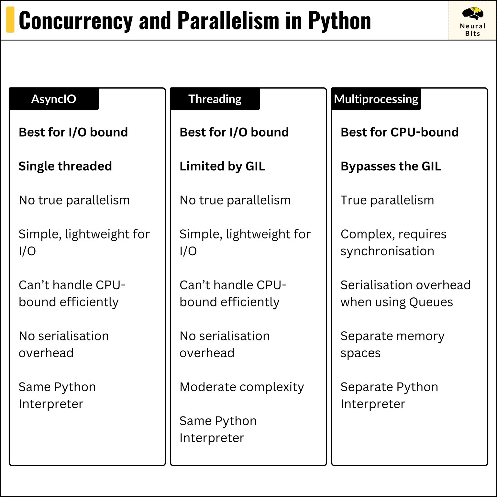

Overview Of Concurrency, Parallelism, and Asynchronous Execution#
The Problem: Synchronous Execution In Single Process And Single Thread#
In general, and by default, a normal Python program runs as a single process with a single thread. This is known as the “main thread” within the “main process”.
Single Process: When you run a Python script, the Python interpreter starts a single process to execute that script. This process is assigned by the operating system and has its own memory space.
Single Thread: Within this process, Python starts with a single thread of execution, often referred to as the “main thread”. This thread is responsible for executing your code sequentially from top to bottom.
Global Interpreter Lock (GIL): It’s worth noting that CPython (the standard Python implementation) uses a Global Interpreter Lock (GIL), which allows only one thread to execute Python bytecode at a time, even on multi-core processors. We will see later to circumvent this.
1import os
2import threading
3import time
4
5
6def worker() -> None:
7 print(f"Worker thread started with PID: {os.getpid()}, TID: {threading.get_ident()}")
8 time.sleep(1)
9 print("Worker thread finished.")
10
11
12def main() -> None:
13 print(f"Main thread with PID: {os.getpid()}, TID: {threading.get_ident()}")
14 worker()
15 print("Main thread completed.")
16
17
18if __name__ == "__main__":
19 main()
Main thread with PID: 3767, TID: 140274814442368
Worker thread started with PID: 3767, TID: 140274814442368
Worker thread finished.
Main thread completed.
And if we want to say, run 3 workers to do some tasks independently, we can do it sequentially like below:
workers = [worker, worker, worker]
for worker in workers:
worker()
This would take 3 seconds to run, as each worker runs sequentially. This is uncalled for since each worker is doing an independent task. If we can somehow run each workers concurrently or in parallel, we can reduce the execution time to 1 second. This is where concurrency or parallelism comes in.
CPU Bound#
Definition: What is CPU-Bound?#
A CPU-bound operation refers to a type of task that primarily utilizes the Central Processing Unit (CPU) for its execution. These operations are limited by the CPU’s processing power rather than by input/output (I/O) activities such as disk reads/writes or network communication. In other words, the speed at which a CPU-bound task runs is determined by how fast the CPU can perform computations, making efficient CPU usage crucial for performance.
Single Core CPU means that a CPU-bound task will be executed by a single core without any parallelism.
Multi Core CPU means that a CPU-bound task can be executed by multiple cores with parallelism.
Example: Calculating Prime Numbers#
Consider the task of finding all prime numbers up to a large number n. This task involves intensive computations—checking each number for primality—which requires significant CPU resources. The operation doesn’t depend on waiting for data from external sources but relies entirely on the CPU’s ability to perform calculations.
1from math import isqrt
2from typing import List
3
4def is_prime(number: int) -> bool:
5 if number < 2:
6 return False
7 for divisor in range(2, isqrt(number) + 1):
8 if number % divisor == 0:
9 return False
10 return True
11
12def find_primes(limit: int) -> List[int]:
13 """
14 Find all prime numbers up to a given limit.
15 """
16 primes: List[int] = []
17 for num in range(2, limit + 1):
18 if is_prime(num):
19 primes.append(num)
20 return primes
21
22def main() -> None:
23 """
24 Main function to execute the prime number search.
25 """
26 limit: int = 100000
27 primes: List[int] = find_primes(limit)
28 print(f"Number of primes up to {limit}: {len(primes)}")
29
30if __name__ == "__main__":
31 main()
Number of primes up to 100000: 9592
Why It’s CPU-Bound#
Aspect |
Description |
|---|---|
Computational Intensity |
The process involves numerous calculations, especially for large limits, making the CPU the bottleneck. |
Lack of I/O Wait |
The operations do not involve waiting for external resources like disk I/O or network responses; the CPU continuously works on computations. |
Impact of CPU Performance |
Faster CPUs or more efficient algorithms can significantly reduce the computation time for CPU-bound tasks. |
I/O Bound#
Definition: What is I/O-Bound?#
An I/O-bound operation refers to a type of task that is limited by the system’s input/output (I/O) capabilities rather than its CPU processing power. These operations spend more time waiting for I/O activities, such as reading from or writing to disk, network communication, or user input, than performing computations. As a result, the overall performance of I/O-bound tasks is primarily constrained by the speed and efficiency of the I/O subsystem.
Example: Reading A Website#
Consider the task of fetching data from multiple web APIs. Each HTTP request involves network communication, where the program waits for the server to respond. The performance of this task is limited by the network latency and the response time of the servers, making it an I/O-bound operation.
1import requests
2import time
3
4
5def download_site(url: str, session: requests.Session) -> None:
6 with session.get(url) as response:
7 print(f"Read {len(response.content)} from {url}")
8
9if __name__ == "__main__":
10 url = "https://www.gaohongnan.com/intro.html"
11 session = requests.Session()
12 download_site(url, session)
Read 90698 from https://www.gaohongnan.com/intro.html
Why It’s I/O-Bound#
Aspect |
Description |
|---|---|
Waiting for I/O Operations |
The task spends a significant amount of time waiting for the network response from the website. |
Limited by Network Latency |
The speed of data transfer over the internet and the responsiveness of the server affect performance. |
Minimal CPU Usage |
The CPU remains largely idle while waiting for the I/O operations to complete, as the primary activity is data retrieval over the network. |
Comparison of CPU-Bound and I/O-Bound Operations#
Aspect |
CPU-Bound Operations |
I/O-Bound Operations |
|---|---|---|
Primary Limitation |
CPU processing power |
I/O subsystem speed (network, devices, etc.) |
Example Tasks |
Calculating prime numbers, data encryption |
Making HTTP requests, database queries |
Performance Factors |
CPU speed, number of cores, algorithm efficiency |
Network latency, I/O bandwidth, device speed |
Optimization Strategies |
Efficient algorithms, parallel processing |
Asynchronous I/O, caching, faster I/O solutions |
See Also
Visualization of Process and Thread#
Here’s a simple diagram to visualize the relationship:
+--------------------------------------------------+
| Operating System |
| +--------------------+ +--------------------+ |
| | Process A | | Process B | |
| | +---------------+ | | +---------------+ | |
| | | Thread 1 | | | | Thread 1 | | |
| | +---------------+ | | +---------------+ | |
| | +---------------+ | | +---------------+ | |
| | | Thread 2 | | | | Thread 2 | | |
| | +---------------+ | | +---------------+ | |
| | ... | | ... | |
| +--------------------+ +--------------------+ |
| |
+--------------------------------------------------+
The Operating System (OS) manages multiple independent processes.
Each process can have one or more threads.
Threads within the same process share the same memory space, whereas processes are isolated from one another.
Process#
Definition: What is a Process?#
A process is an independent program in execution, with its own memory space and system resources. are isolated from each other, meaning one process cannot directly access the memory of another process.
Key Characteristics#
Isolation: Each process operates in its own memory space. This isolation ensures that one process cannot directly interfere with the memory of another, enhancing stability and security.
Resource Allocation: Processes have their own set of resources, including memory, file handles, and system resources.
Inter-Process Communication (IPC): Since processes are isolated, communication between them requires explicit mechanisms like pipes, sockets, shared memory, or message queues.
Overhead: Creating and managing processes typically incurs more overhead compared to threads due to the isolation and resource allocation involved.
In Python:
The
multiprocessingmodule allows the creation of separate processes, each with its own Python interpreter and memory space.This bypasses the Global Interpreter Lock (GIL), enabling true parallelism for CPU-bound tasks.
Example: Two Scripts Running Simultaneously#
Say we have two scripts, script1.py and script2.py.
import time
def main() -> None:
print("Script 1 started")
time.sleep(20)
print("Script 1 completed")
import time
def main() -> None:
print("Script 2 started")
time.sleep(20)
print("Script 2 completed")
During the execution of script1.py, the OS will create a new process to run
the script. At the same time, another new process will be created to run
script2.py. The scripts will print their process ID, like below:
Script 1 started with PID: 12345
Script 2 started with PID: 12346
We can see they are two processes by using the ps command in the terminal.
ps aux | grep -E "script1.py|script2.py" | grep -v grep
This will yield something like:
gaohn 12345 0.0 0.0 111111 1111 ?? S 11:11AM 0:00.00 /usr/bin/python3 /Users/gaohn/gaohn/omniverse/sandbox.py
gaohn 12346 0.0 0.0 111111 1111 ?? S 11:11AM 0:00.00 /usr/bin/python3 /Users/gaohn/gaohn/omniverse/sandbox.py
Also note that your applications are also processes. Google Chrome is a process, slack is a process, discord is a process, etc.
Process ID#
To get the process ID of the current process, we can use the os.getpid()
function.
1import os
2
3print(f"Current process ID: {os.getpid()}")
Current process ID: 3767
To list all processes, we can use the psutil library.
import psutil
import contextlib
total_processes = len(psutil.pids())
print(f"Total Processes: {total_processes}")
for proc in psutil.process_iter(["pid", "name", "num_threads"]):
with contextlib.suppress(psutil.NoSuchProcess, psutil.AccessDenied, psutil.ZombieProcess):
print(f"PID: {proc.info['pid']}, Name: {proc.info['name']}, Threads: {proc.info['num_threads']}")
Thread#
Definition: What is a Thread?#
A thread is the smallest sequence of programmed instructions that can be managed independently by a scheduler. Threads exist within a process and share the same memory and resources of that process.
Key Characteristics#
Shared Memory Space: Threads within the same process share the same memory, allowing for efficient communication and data sharing.
Lightweight: Creating and managing threads generally incurs less overhead compared to processes because they share the same memory space.
Concurrency: Multiple threads can execute concurrently within the same process, which is beneficial for I/O-bound tasks.
Synchronization: Shared memory necessitates synchronization mechanisms (like locks, semaphores) to prevent race conditions and ensure data integrity.
In Python:
The
threadingmodule facilitates the creation of threads within a process.However, due to the Global Interpreter Lock (GIL) in CPython, threads cannot execute Python bytecodes in true parallelism for CPU-bound tasks. They are, however, effective for I/O-bound operations.
Example: Python Program On Single Process And Single Thread#
1import os
2import threading
3import time
4
5
6def worker() -> None:
7 print(f"Worker thread started with PID: {os.getpid()}, TID: {threading.get_ident()}")
8 time.sleep(2)
9 print("Worker thread finished.")
10
11
12def main() -> None:
13 print(f"Main thread with PID: {os.getpid()}, TID: {threading.get_ident()}")
14 worker()
15 print("Main thread completed.")
16
17
18if __name__ == "__main__":
19 main()
Main thread with PID: 3767, TID: 140274814442368
Worker thread started with PID: 3767, TID: 140274814442368
Worker thread finished.
Main thread completed.
Thread ID#
To get the thread ID of the current thread, we can use the
threading.get_ident() function.
1import threading
2
3print(f"Current thread ID: {threading.get_ident()}")
Current thread ID: 140274814442368
Memory Sharing and Synchronization#
Shared Memory:
Threads within the same process can easily share data by accessing shared variables in memory (i.e. global variables).
Processes, being isolated, require explicit IPC mechanisms to share data.
Synchronization Mechanisms:
Locks: Prevent multiple threads from accessing shared resources simultaneously.
Semaphores: Control access to a common resource by multiple threads.
Events and Conditions: Allow threads to wait for certain conditions or events before proceeding.
Process vs Thread#
Aspect |
Processes |
Threads |
|---|---|---|
Memory Space |
Separate for each process |
Shared within the same process |
Creation Overhead |
Higher overhead |
Lower overhead |
Communication |
Requires IPC mechanisms |
Direct access to shared memory |
Isolation |
High isolation enhances security and stability |
Lower isolation can lead to race conditions |
Concurrency |
True parallelism in multi-core systems |
Limited by GIL in CPython for CPU-bound tasks |
Use Cases |
CPU-bound tasks, applications requiring isolation |
I/O-bound tasks, applications requiring shared data |
MultiThreading#
To illustrate the difference between processes and threads, let’s consider a Python example where we perform a CPU-bound task: calculating the factorial of a large number.
Join == Barrier#
So the join is like PyTorch’s torch.distributed.barrier() idea.
Using Threads#
import threading
from typing import List
import math
import time
def compute_factorial(n: int, results: List[int], index: int) -> None:
"""
Compute the factorial of a number and store the result.
Args:
n (int): The number to compute the factorial of.
results (List[int]): Shared list to store results.
index (int): Index to store the result in the list.
"""
results[index] = math.factorial(n)
def main_threads() -> None:
numbers = [100000] * 4 # List of numbers to compute factorial
threads = []
results = [0] * len(numbers)
start_time = time.time()
for i, number in enumerate(numbers):
thread = threading.Thread(target=compute_factorial, args=(number, results, i))
threads.append(thread)
thread.start()
for thread in threads:
thread.join()
end_time = time.time()
print(f"Threads Result: Computed {len(results)} factorials in {end_time - start_time:.2f} seconds")
if __name__ == "__main__":
main_threads()
Using Processes#
import multiprocessing
from typing import List
import math
import time
def compute_factorial_process(n: int, queue: multiprocessing.Queue) -> None:
"""
Compute the factorial of a number and put the result in a queue.
Args:
n (int): The number to compute the factorial of.
queue (multiprocessing.Queue): Queue to store the result.
"""
queue.put(math.factorial(n))
def main_processes() -> None:
numbers = [100000] * 4 # List of numbers to compute factorial
processes = []
queue = multiprocessing.Queue()
start_time = time.time()
for number in numbers:
process = multiprocessing.Process(target=compute_factorial_process, args=(number, queue))
processes.append(process)
process.start()
for process in processes:
process.join()
results = [queue.get() for _ in processes]
end_time = time.time()
print(f"Processes Result: Computed {len(results)} factorials in {end_time - start_time:.2f} seconds")
if __name__ == "__main__":
main_processes()
Expected Outcome#
When running both scripts, you will typically observe that the multi-threaded version does not significantly reduce the computation time compared to a single-threaded approach due to the GIL. Conversely, the multi-processing version can leverage multiple CPU cores to achieve true parallelism, resulting in a noticeable decrease in computation time.
Sample Output:
Threads Result: Computed 4 factorials in 12.34 seconds
Processes Result: Computed 4 factorials in 3.21 seconds
Note: Actual times may vary based on system specifications.
Global Interpreter Lock (GIL) in Python#
Definition: The GIL is a mutex that prevents multiple native threads from executing Python bytecodes simultaneously in CPython, the standard Python implementation.
Implications:
CPU-Bound Tasks: Threads are limited by the GIL, preventing true parallel execution on multiple cores. This means that multi-threading does not provide performance benefits for CPU-intensive tasks.
I/O-Bound Tasks: Threads can be beneficial as they can handle I/O operations concurrently, allowing one thread to run while others are waiting for I/O operations to complete.
Workarounds:
Multi-Processing: Using separate processes can achieve parallelism as each process has its own Python interpreter and GIL.
Alternative Python Implementations: Some implementations like Jython or IronPython do not have a GIL, allowing true multi-threading.
Multiprocessing#
import multiprocessing
import os
import time
from typing import Any, Dict, List
def worker(name: str, sleep_time: int) -> None:
"""
Worker function that simulates a task by sleeping.
"""
pid = os.getpid()
print(f"{name} started with PID: {pid}")
for i in range(3):
print(f"{name} is working... ({i+1}/3)")
time.sleep(sleep_time)
print(f"{name} with PID: {pid} completed.")
def spawn_processes(workers: List[Dict[str, Any]]) -> List[multiprocessing.Process]:
"""
Function to spawn worker processes.
"""
process_list: List[multiprocessing.Process] = []
for worker_info in workers:
process = multiprocessing.Process(target=worker, args=(worker_info["name"], worker_info["sleep_time"]))
process_list.append(process)
return process_list
def monitor_processes(process_list: List[multiprocessing.Process]) -> None:
"""
Function to monitor and join child processes.
"""
parent_pid = os.getpid()
print(f"\nParent Process PID: {parent_pid}")
print("Monitoring Child Processes:\n")
for process in process_list:
print(f"Process Name: {process.name}, PID: {process.pid}, Alive: {process.is_alive()}")
def main() -> None:
"""
Main function to manage the process workflow.
"""
workers = [{"name": "Process A", "sleep_time": 2}, {"name": "Process B", "sleep_time": 3}]
process_list = spawn_processes(workers)
for process in process_list:
process.start()
time.sleep(1) # Allow some time for processes to start
monitor_processes(process_list)
for process in process_list:
process.join()
print("\nAll child processes have completed.")
if __name__ == "__main__":
main()
join == dist.barrier() idea
start ?
Aspect |
Default Synchronous Python Code |
Multi-Threaded Python Code ( |
Multi-Processed Python Code ( |
|---|---|---|---|
Execution Units |
Single Process, Single Thread |
Single Process, Multiple Threads |
Multiple Processes, Each with Single Thread |
Process ID (PID) |
One PID |
One PID |
Multiple PIDs |
Thread ID (TID) |
One TID |
Multiple TIDs |
Each process has its own TID |
Memory Space |
Shared (single process) |
Shared within the same process |
Isolated between processes |
Concurrency Model |
Sequential execution |
Concurrent execution within the same process |
True parallel execution across multiple processes |
Best Suited For |
Simple, linear tasks |
I/O-bound tasks (e.g., network requests, file I/O) |
CPU-bound tasks (e.g., data processing, computations) |
Overhead |
Minimal |
Low |
Higher |
Impact of GIL |
Not applicable |
Limited for CPU-bound tasks; efficient for I/O-bound |
Bypasses GIL; allows true parallelism for CPU-bound tasks |
1. Understanding Threading and Asyncio#
Threading#
Threading involves running multiple threads (lightweight processes) concurrently within a single process.
Pre-emptive Multitasking: The operating system (OS) manages thread scheduling and can interrupt any thread at virtually any point to switch execution to another thread. This means threads don’t need to explicitly yield control.
Asyncio#
Asyncio is a library for writing concurrent code using the
async/awaitsyntax.Cooperative Multitasking: Tasks voluntarily yield control (e.g., when awaiting I/O operations). The scheduler switches tasks only at these yield points.
2. Pre-emptive Multitasking in Threading#
With pre-emptive multitasking, the OS can interrupt a thread at any time, even in the middle of executing a single Python statement. This can lead to issues like race conditions, where the program’s behavior depends on the unpredictable timing of threads.
Illustrative Example: Race Condition in Threading#
Consider a simple counter that’s incremented by multiple threads:
import threading
import time
# Shared resource
counter = 0
def increment():
global counter
for _ in range(100000):
counter += 1 # Not an atomic operation
# Create multiple threads
threads = []
for _ in range(2):
thread = threading.Thread(target=increment)
threads.append(thread)
thread.start()
# Wait for all threads to finish
for thread in threads:
thread.join()
print(f"Final counter value: {counter}")
Preventing Race Conditions with Locks#
To ensure that only one thread modifies the counter at a time, use a lock:
import threading
counter = 0
lock = threading.Lock()
def safe_increment():
global counter
for _ in range(100000):
with lock:
counter += 1
threads = []
for _ in range(2):
thread = threading.Thread(target=safe_increment)
threads.append(thread)
thread.start()
for thread in threads:
thread.join()
print(f"Final counter value: {counter}")
Output: Final counter value: 200000
Explanation: The with lock: statement ensures that the block of code
modifying counter is executed by only one thread at a time, preventing race
conditions.
3. Cooperative Multitasking in Asyncio#
In contrast to threading, asyncio requires tasks to explicitly yield control, typically when awaiting I/O operations. This eliminates the risk of a task being interrupted in the middle of a statement, thus avoiding race conditions without the need for locks in many cases.
Example Using Asyncio#
Let’s implement a similar counter increment using asyncio:
import asyncio
counter = 0
async def increment():
global counter
for _ in range(100000):
counter += 1 # Safe in asyncio as no pre-emptive switches
if _ % 10000 == 0:
await asyncio.sleep(0) # Yield control
async def main():
await asyncio.gather(increment(), increment())
print(f"Final counter value: {counter}")
# Run the asyncio program
asyncio.run(main())
Output: Final counter value: 200000
Explanation:
No Pre-emptive Interruptions: Since asyncio uses cooperative multitasking,
counter += 1executes atomically betweenawaitpoints.Yielding Control: The
await asyncio.sleep(0)statement allows other tasks to run, ensuring that tasks take turns but only at defined points.
Why Is This Safer?#
Atomic Operations: Operations between
awaitpoints are executed without interruption, reducing the risk of race conditions.No Need for Locks: Since tasks yield control explicitly, shared resources can be managed more predictably.
4. Summary of Key Differences#
Feature |
Threading (Pre-emptive) |
Asyncio (Cooperative) |
|---|---|---|
Task Switching |
OS can interrupt at any time |
Tasks yield control explicitly |
Synchronization |
Requires locks to prevent race conditions |
Often safer due to controlled yielding |
Complexity |
More complex due to potential for race issues |
Simpler in scenarios with I/O-bound tasks |
Performance |
Suitable for CPU-bound tasks with multiple cores |
Best for I/O-bound and high-level structured network code |
Overhead |
Higher due to OS thread management |
Lower, managed within the program |
5. When to Use Threading vs Asyncio#
Use Threading When:
You need to perform CPU-bound operations.
You’re working with libraries that are not asynchronous.
You require true parallelism on multi-core processors.
Use Asyncio When:
You’re handling I/O-bound tasks (e.g., network requests, file I/O).
You want to manage concurrency with lower overhead.
Your codebase can be structured around
async/await.
Conclusion#
Understanding the fundamental differences between threading and asyncio, especially regarding how they handle task switching, is crucial for writing efficient and bug-free concurrent Python programs. Pre-emptive multitasking in threading offers flexibility but introduces complexity due to potential race conditions. Cooperative multitasking in asyncio provides a safer and often simpler model for managing concurrency, particularly for I/O-bound applications.
By choosing the appropriate concurrency model and employing synchronization mechanisms like locks when necessary, you can harness the full power of Python’s concurrency capabilities effectively.
Concurrency vs Parallelism#

Here are the three parallelization mechanisms in Python:
⇢ AsyncIO#
Type: Single-threaded
Best for: I/O-bound tasks
Limitations: Not suitable for CPU-bound tasks like image or video processing
How it works: Uses a single event loop with coroutines managed by async/await, which struggles with CPU-heavy operations.
Conclusion: Not ideal for CPU-intensive tasks.
⇢ Threading#
Type: Multi-threaded with shared memory
Best for: I/O-bound tasks
Limitations: Limited by the Global Interpreter Lock (GIL), which allows only one thread to execute Python bytecode at a time, adding overhead for CPU-bound tasks.
Analogy: Think of the GIL as a mediator in a debate, letting only one person speak at a time.
Conclusion: Effective for I/O tasks but inefficient for CPU-heavy processing.
⇢ Multiprocessing#
Type: Multiple processes with separate memory spaces
Best for: CPU-bound tasks
How it works:
Linux/macOS: Uses “Fork” to create child processes that copy the parent’s memory.
Windows: Uses “Spawn” to start fresh interpreter instances with necessary resources.
Advantages: Achieves true parallelism, allows control over processing workflows, and enables efficient data sharing through Queues or raw ctypes arrays.
Conclusion: The preferred choice for CPU-intensive operations.
Summary:#
AsyncIO: Single-threaded, ideal for I/O, not for CPU-bound tasks.
Threading: Shared memory, constrained by GIL.
Multiprocessing: Separate memory spaces, offers true parallelism.
References And Further Readings#
https://realpython.com/python-concurrency/#when-is-concurrency-useful
Chapter 7 Concurrency And Parallelism From Effective Python